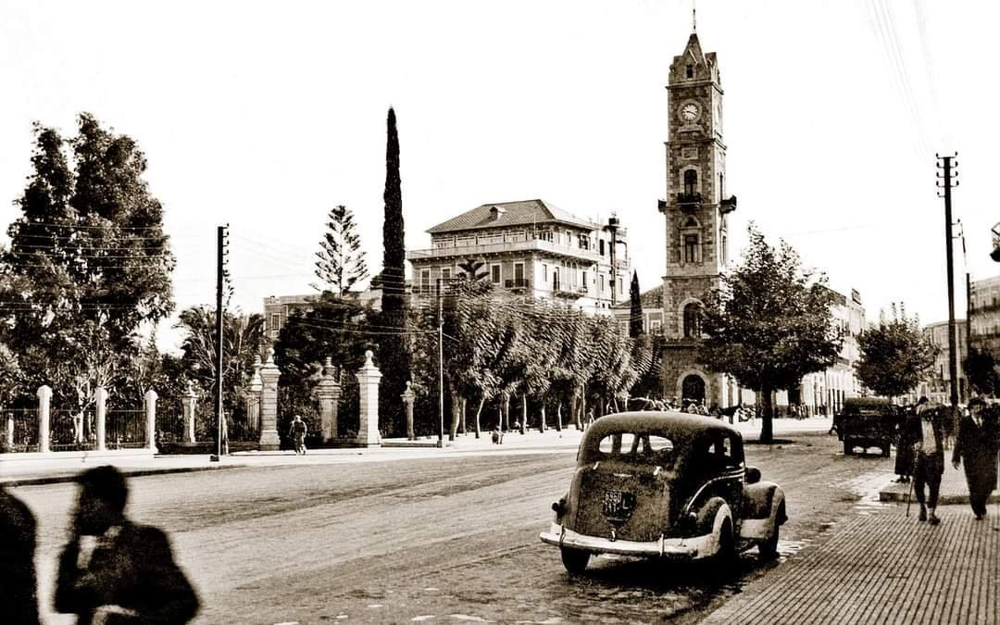

تاريخ طرابلس
ثاني أكبر مدينة في لبنان، تتمتع بتاريخ عريق يمتد لأكثر من 3500 عام عبر حضارات متعاقبة، نقشت كل منها اسمها على حجارتها.
حقائق سريعة
- التأسيس:1500 ق.م (الفينيقيون)
- أصل التسمية:تريبوليس (المدن الثلاث)
- المدينة القديمة:+160 معلماً تاريخياً
- التراث:مرشحة للتراث العالمي (يونيسكو)

إرث المماليك
تعتبر طرابلس المدينة المملوكية الثانية في العالم بعد القاهرة من حيث التراث المعماري. المدارس والمساجد والحمامات والخانات التي بُنيت في هذا العهد تشكل قلب المدينة القديمة النابض، حيث تتزين الجدران بالمقرنصات والزخارف الهندسية البديعة والخط العربي الأصيل.